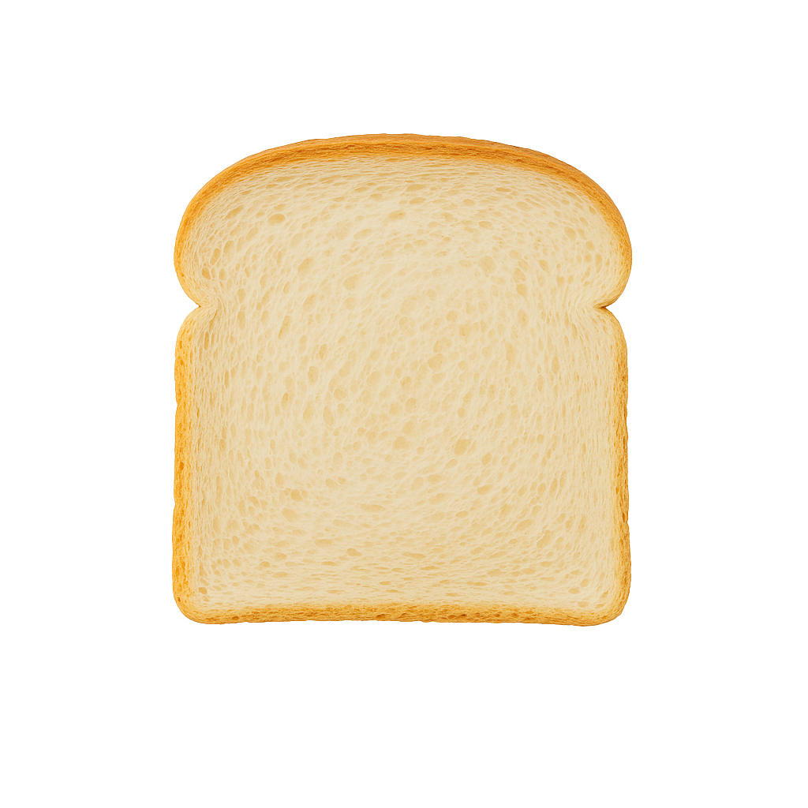
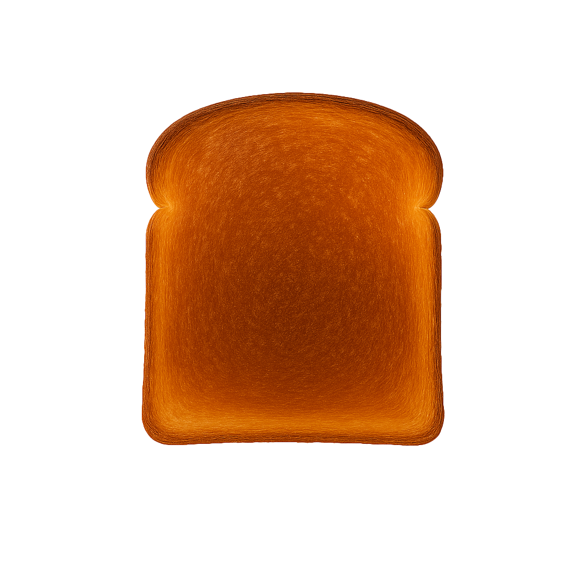
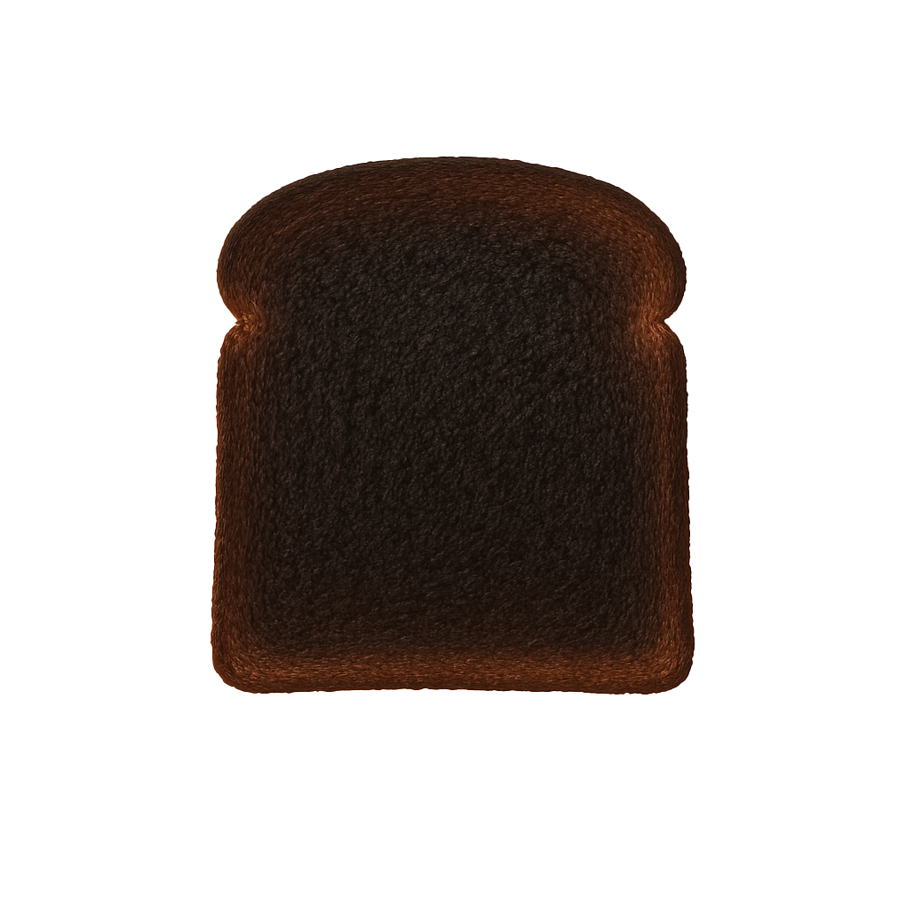

×
Toast Level Meaning 🍞
☀️ UV 0–1.9: Fresh Bread
(Very low risk)
 ☀️ UV 2–3.9: Lightly Toasted
☀️ UV 2–3.9: Lightly Toasted
(Low risk) ☀️ UV 4–5.9: Medium Toast
☀️ UV 4–5.9: Medium Toast
(Moderate risk)☀️ UV 6–7.9: Golden Brown
(High risk)
 ☀️ UV 8–9.9: Dark Toast
☀️ UV 8–9.9: Dark Toast
(Very high risk)☀️ UV 10+: Burnt Toast
(Extreme risk)